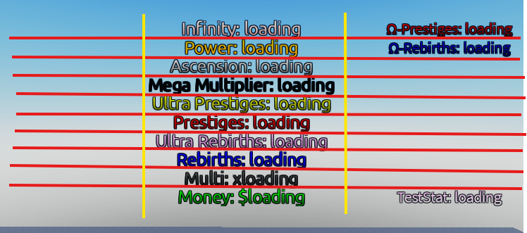

Player Interface/GUI
Players always need to see what amount of something they have to progress in a game. In this instance, there will be an overhead interface that lets players see how much stats they own. To configure this, read the sections below.
After you finish setting up the kit, in ReplicatedStorage, there will be a 'BillboardGui' object named StatGui. This is the player overhead interface.
Format
The StatGui has a special format. The GUI is split into 3 columns, called Docks. Within these docks, it is split into 10 rows, each that can store a TextLabel. In order for the TextLabel's text to write the stat and it's amount, the attribute called "GUIName" in the same stat in the KitStats folder (ReplicatedStorage/KitStats) can be changed to your liking.

For example, if you changed the GUIName of the stat, "Money", the interface will show "[GUIName]:x"
Placement
The TextLabels in the docks have a special attribute called DockHeight. It is located at the bottom of the properties of the TextLabel, as shown in the image. The DockHeight attribute can go from 1 to 10. If the attribute is set to something outside of that range (eg. 15, 0), it will not render due to it being out of the dock's boundaries.